Создание игр в Roblox Studio
Программирование на Lua. Функции
Что такое функция?
Функции в программировании
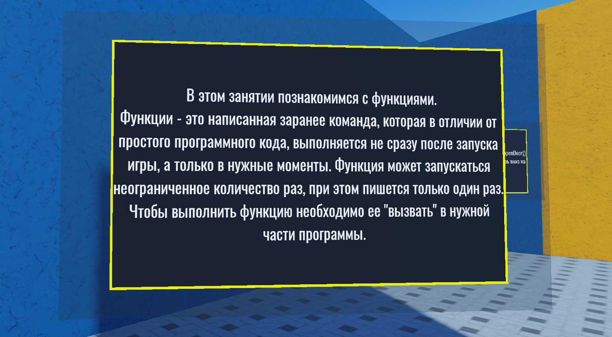На самом деле мы уже не раз встречались с функциями. Команды print() и wait() - это встроенные функции языка LUA.
Функция - заранее написанная и предопределённая последовательность действий (алгоритм), которая, в отличие от простого программного кода, не выполняется автоматически в момент нажатия на кнопку Play, а ожидает специальной команды для начала выполнения внутри скрипта.
Эта команда называется «вызов функции» - чтобы выполнить написанные в функции действия, нужно просто написать ее называние в программном коде.
Если сказать более образно, то при создании функции мы «обучаем» объект делать какое-то сложное действие и говорим, что, когда мы напишем название этого действия, объект должен его выполнить.
Это можно сравнить с дрессировкой собак: когда у вас есть собака, не знающая команду «дай лапу», сколько бы вы ни пытались говорить ей эту команду, она не сможет ее выполнить. Однако, если собаку обучить этой команде один раз, в будущем она сможет совершать это сложное (для собаки) действие, просто услышав правильную фразу.
При этом собака, умеющая подавать лапу, не делает этого постоянно - она просто знает, что умеет это делать и ждет команды. Таким же образом и функция, единожды написанная в программном коде, не выполняется при запуске скрипта, пока не будет вызвана в программном коде. Написав ее имя, мы автоматически выполним все действия, описанные внутри нее.
Обычно функции применяются для экономии времени и оптимизации программного кода, когда у вас есть достаточно сложное действие, состоящее из нескольких команд и повторяющееся в разных местах программы.
Если этот код копировать и вставлять этот код - это сделает текст менее читабельным и менее удобным для справок. Вместо этого мы можем создать функцию, удобным образом ее назвать и выполнять это действие в нужных местах всего лишь одной строкой.
Функции в Lua
Для того, чтобы создать функцию, необходимо написать ключевое слово function и после этого указать имя функции.
Обратите внимание: после имени функции всегда должны стоять скобки - это место для параметров функции, если они у неё присутствуют.
Базовая структура написания функций строится следующим образом:
function Имя_функции()
[действия]
end
Рассмотрим использование функций в языке Lua.
Простые функции
Задача 1 - Функция открытия двери
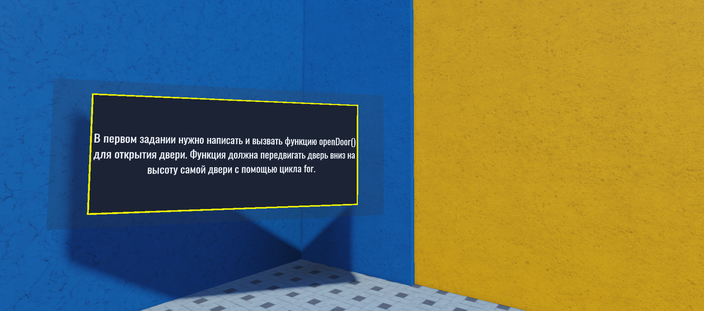Первая задача знакомит с созданием и использованием функции. В ней необходимо написать простую функцию, открывающую дверь, к которой она прикреплена. При этом, в отличие от предыдущих решений, в этот раз мы напишем универсальную функцию, которая будет открывать любую дверь, вне зависимости от размеров двери.
Создадим скрипт внутри группы Task1 и сделаем ссылку на дверь (Task1_Door). После этого начнём писать функцию openDoor():
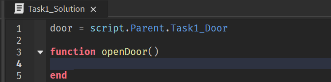Алгоритм работы функции следующий: функция должна получить высоту двери, после этого запустить цикл, который будет перемещать дверь вниз на 1 юнит столько раз, сколько юнитов дверь составляет в высоту.
То есть, дверь в 20 юнитов нужно переместить вниз на 1 юнит 20 раз. Для двери в 35 юнитов - 35 раз.
Введём переменную height, которая будет хранить в себе высоту двери. Эта переменная создается внутри функции, поэтому перед ней необходимо поставить ключевое слово local - специальное обозначение, говорящее о том, что эта переменная доступна только внутри ее родительской функции, а за ее пределами попросту не будет существовать.
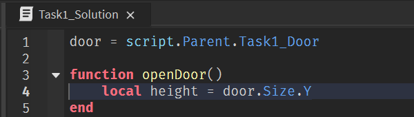После этого напишем цикл for, который будет перемещать дверь и запустим игру. Ничего не происходит.. Хмм, почему же?
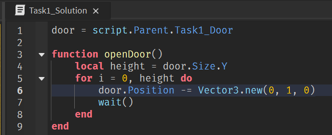Потому что нужно добавить вызов функции в конце программы, чтобы запустить написанную функцию:
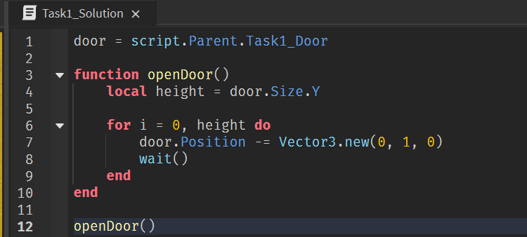Задача 2 - Анимация поршня и двери
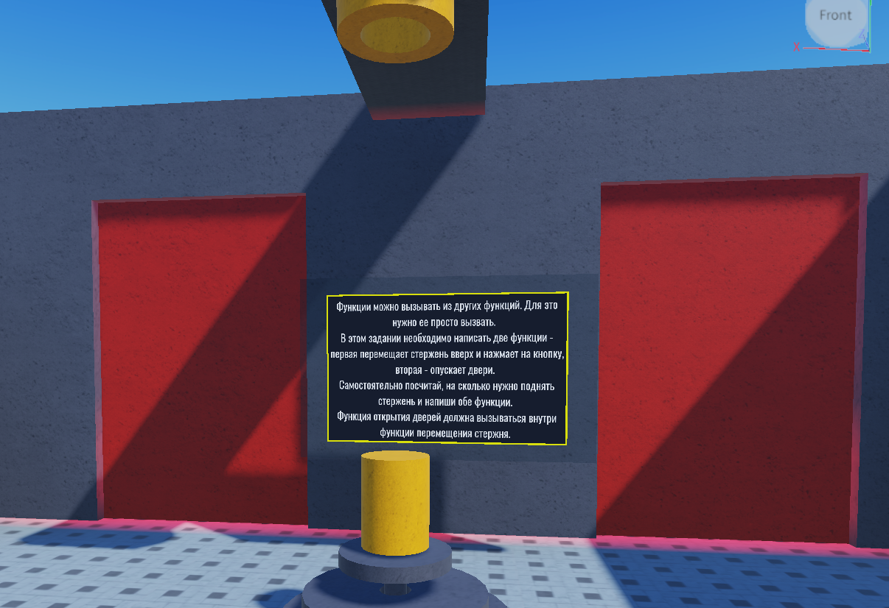В данной задаче есть поршень, находящийся под кнопкой. Необходимо написать функцию, которая заставит поршень перемещаться наверх, пока он не достигнет кнопки, а после этого вызвать другую функцию для открытия двери.
В итоге мы создадим небольшую анимированную сцену, в которой поршень начнёт двигаться наверх, нажмёт на кнопку, после этого двери начнут двигаться вниз и откроется проход.
Для начала создадим скрипт в группе Task2 и скопируем текст скрипта из предыдущей задачи - благодаря тому, что мы написали универсальную функцию, мы можем применить её и здесь.
Поменяем ссылку на дверь, добавим переменную со ссылкой на поршень и начнём писать функцию для его анимации:
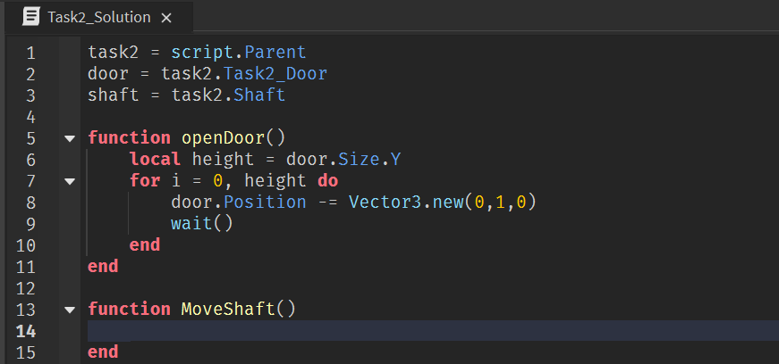Способ передвижения поршня будет такой же, как и у двери, однако, высота его передвижения не будет равна высоте поршня. Нужно самостоятельно найти расстояние, на которое он должен подняться до того момента, как упрется в кнопку. Для этого посмотрим на координаты поршня в нижнем положении, переместим его в верхнее положение и найдём разницу.
Если хочется пропустить этот шаг, используем 20 повторений:
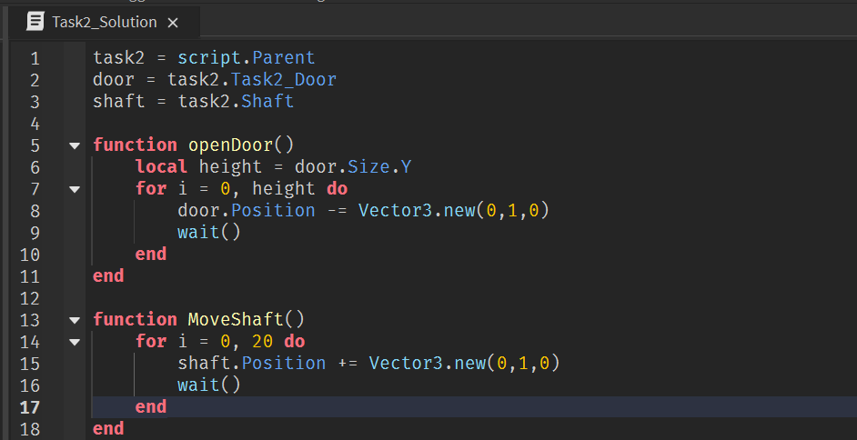После окончания цикла, по условию задачи необходимо вызвать функцию openDoor(). Для этого добавим строку и напишем ее название.
Функция готова! Добавим вызов функции, небольшую паузу между движениями, и задача будет решена:
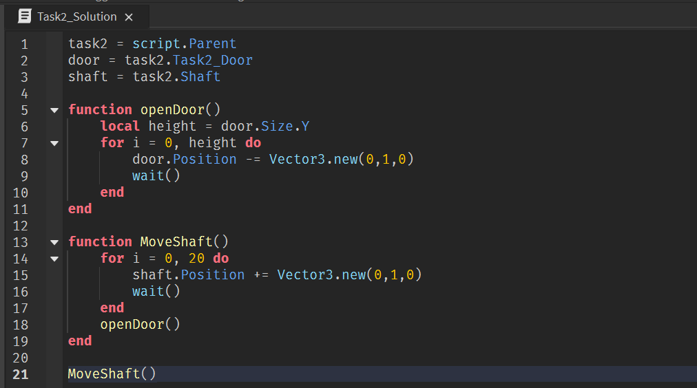Параметры функций
Задача 3 - Функция для поднятия ступеней
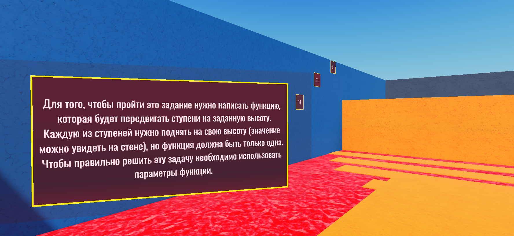В этой задаче нам необходимо написать функцию, поднимающую ступени над лавой. Каждая ступень должна подняться на свое собственное количество юнитов, указанное на стене слева (5, 10, 15 и 20 юнитов соответственно).
Если решать эту задачу способом, который мы использовали ранее, то придётся написать пять разных функций - по одной на каждую высоту. Это неэффективный способ, занимающий слишком много времени и пространства в программном коде.
Если мы будем использовать статичные значения, то другого варианта нет. Однако вместо них мы будем использовать переменную, которая будет принимать разные значения в зависимости от поднимаемой ступени. Назовем ее height. Ступени тоже будут разные - для них введём переменную platform.
Чтобы понять, как решать такой тип задач, нужно подумать о ней не с точки зрения конкретных чисел, а с точки зрения действий, которые должны происходить, и написать их алгоритм - абстрактную последовательность действий, не опирающуюся на конкретные числа.
Общий алгоритм функции звучит так:
1. Получить значение переменной height для активной ступени
2. Переместить ступень step на 1 юнит. Повторить это действие height раз.
Действия, выполняющиеся для каждой ступени, абсолютно одинаковые, изменяется только значение переменной height. При этом переменная height должна изменяться в момент каждого вызова функции.
Такие переменные называются параметрами функции и задаются особым образом - они указываются в скобках после имени функции. Их значение указывается в скобках во время вызова функции.
Например:
function plus(a,b) --создание функции
print(a+b)
end
plus(6,9) --вызов функции со значениями 6 и 9
В этом примере написана функция сложения, которая выводит сумму двух чисел. В момент написания функции мы не знаем, какими будут эти числа, но мы точно знаем, что они тут будут.
Поэтому вместо значений мы пишем, как в математических формулах, неизвестные - а и b. Это параметры функции, переменные, которые используются внутри для описания алгоритма ее работы, без привязки к конкретным значениям.
Чтобы задать значение параметра, его необходимо вписать в скобках при вызове функции - именно для этого скобки есть у каждой функции. В этом примере значение а - 6, b - 9.
Если вызвать эту функцию ещё раз, но указать другие значения а и b, она выполнит те же действия, но уже с другими значениями.
Запишем функцию с параметрами
Итак, вернёмся к задаче. Создадим скрипт для группы Task3, введём переменные для каждой ступени в уровне:
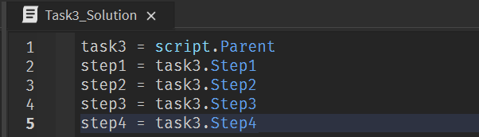Далее необходимо написать функцию, которая будет поднимать ступень platform на высоту height. Запишем это как функцию с двумя параметрами:
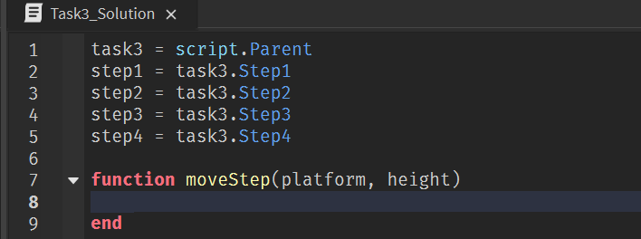Добавим цикл для перемещения ступени, такой же, как и в предыдущих задачах для двери:
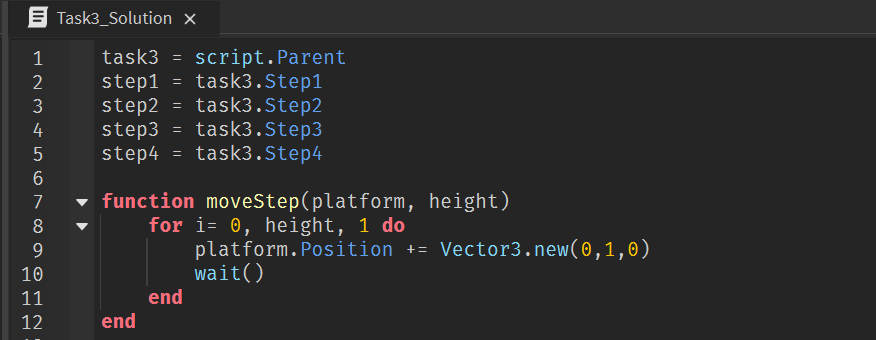Теперь при вызове функции мы можем указать при помощи параметров, какая именно ступень (первый параметр) будет перемещаться, и на какое расстояние (второй параметр).
Последовательно вызовем эту функцию для всех четырех платформ:
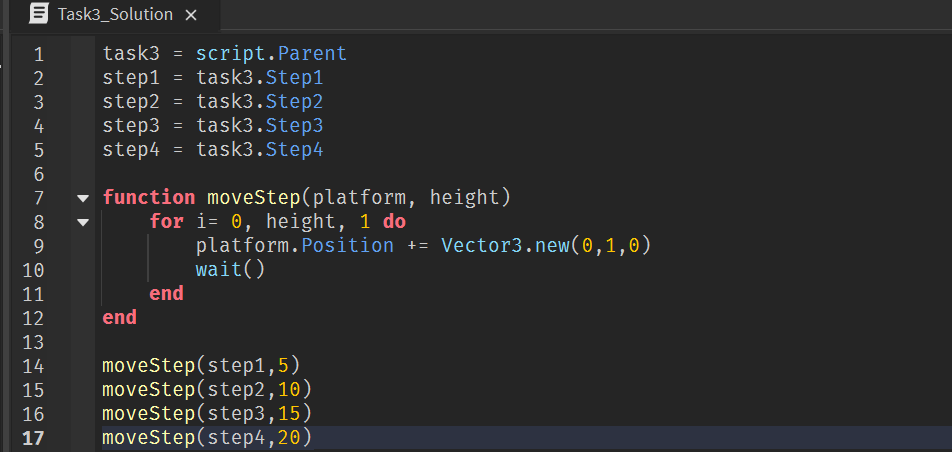Готово!
Встроенные функции Roblox. Методы Instance
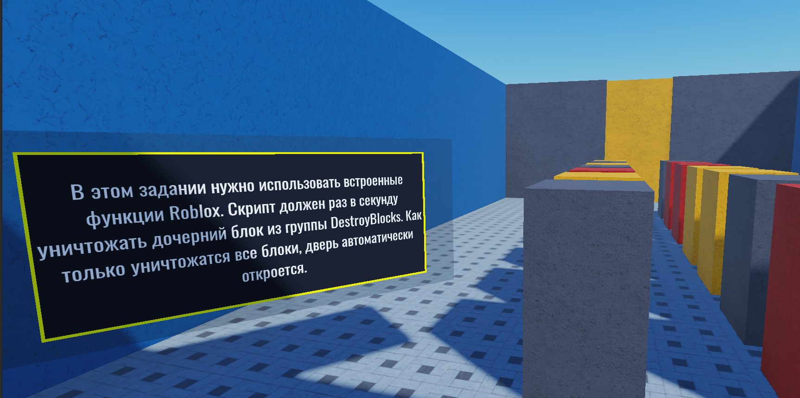Помимо встроенных функций (print, wait и т.п.) и функций, которые мы можем написать самостоятельно, в Roblox существуют также общие функции для работы с объектами.
Это функции, позволяющие выполнять общие для всех объектов действия: уничтожение, клонирование, получение дочерних или родительских объектов и многое другое.
Такие функции вызываются специальным образом: нужно написать название объекта поставить «:» и написать название функции.
Например:
Harry = James:FindFirstChild()
BankZ:Destroy()
Таких функций в Roblox около 20 ( Instance) и они могут работать только с объектами класса Instance (это базовый родительский класс любого объекта в Roblox).
Такие функции, работающие только с одним классом, называются методами.
В этом задании уже есть скрипт, который нужно дополнить новой функцией. В скрипте написан цикл, получающий количество дочерних объектов в группе DestroyBlocks. Этот цикл будет выполняться, пока в ней не останется ни одного дочернего объекта.
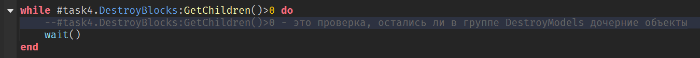Наша задача - написать функцию, которая будет уничтожать блоки, находя первый дочерний объект в этой группе. Для этого мы будем использовать методы :FindFirstChild(), возвращающий первый найденный дочерний объект сущности, для которой был вызван, и :Destroy(), уничтожающий объект.
Добавим функцию DestroyBlock с параметром name:
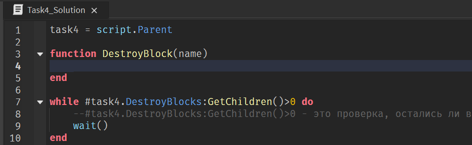Далее создадим локальную переменную block, в которую будем записывать первый найденный в группе дочерний объект DestroyBlocks.
Для этого используем метод :FindFirstChild(). В его скобки передадим параметр name - это имя искомого блока.
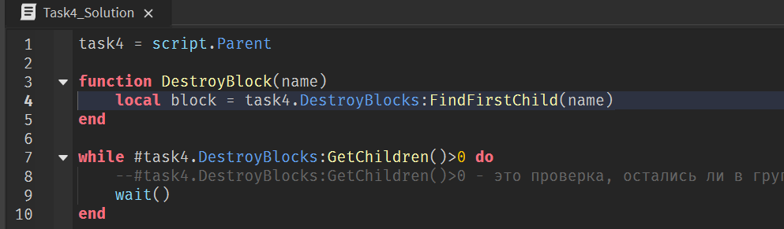После того, как мы нашли блок, его нужно уничтожить. Для этого вызовем метод :Destroy() для переменной block:

Если оставить код в этом виде, то рано или поздно произойдет следующая ошибка: код удалит все блоки с искомым названием, попытается найти и записать в переменную block пустоту, а после попробует удалить ее в следующей строке. Дойдя до этого момента, скрипт сломается и остановится.
Поэтому перед тем, как удалять объект в переменной block, нам нужно проверить, не содержит ли она в себе пустоту, то есть не является ли она «нулевой». Для этого сравним ее значение с ключевым словом nil - это обозначение несуществующего значения, «пустоты».
Мы не можем удалить несуществующий объект, поэтому команда :Destroy() должна выполняться только в том случае, если значение block не является нулевым:
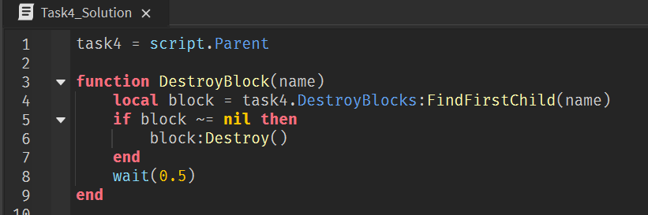Теперь добавим в изначальный цикл вызов этой функции для всех трех типов блоков в группе:
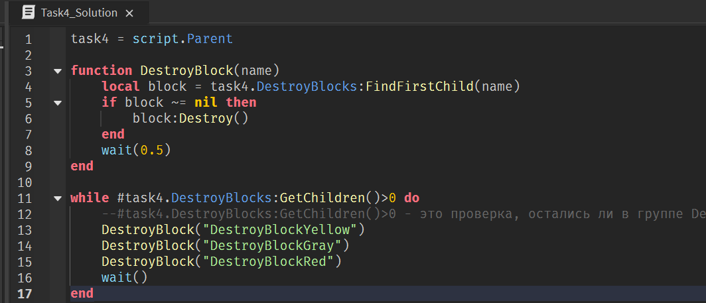Домашкаа 😁
Это завершающее занятие четвёртого модуля, поэтому в качестве домашнего задания предстоит пройти тест на знания, полученные за последние 4 занятия.
-
Что такое скрипт?
- Сценарий игры, по которому развивается сюжет
- Специальный объект, выполняющий программный код
- Предмет, в котором можно писать послания другим игрокам
-
Какую конструкцию нужно использовать для повтора действия?
- Функция
- Условие
- Цикл
-
Какой из циклов может быть бесконечным?
- For
- While
- Оба
- Цикл не может быть бесконечным
-
Что такое переменная?
- Значение, которое может изменяться во время игры
- Область памяти для хранения временных игровых паролей
- Числовое значение уровня здоровья игрового персонажа
-
Выберите все верные утверждения о переменной:
- Значение переменной может изменяться во время игры
- У каждой переменной должно быть имя
- Имя переменной может включать любые символы (кроме цифр)
- Переменная может хранить не только числа, но и текст, объекты и т.д.
- Переменная не может принимать значение, меньшее нуля
-
Что такое условие?
- Выражение, от истинности которого зависит выполнение программы
- Окружение, в котором выполняется скрипт
- Требования к игроку для выполнения скрипта
-
При каких значениях переменных программный код запустится?
if a>b and b==c then
print("Hello, World!")
end- a=2, b=5, c=5
- a=7, b=3, c=10
- a=15, b=1, c=1
-
Что такое функция?
- Назначение скрипта
- Часть программы, которую можно запускать в нужные моменты
- Специальный вид условной конструкции for
-
Что нужно сделать, чтобы запустить функцию?
- Вызывать её в нужном месте программы, написав её название
- Запустить игру и нажать специальную кнопку для активации скрипта
- Написать её название в чате во время игры
-
Для чего функции нужны скобки?
- Чтобы отличать функцию от переменной
- Для указанния порядка выполнения функций
- Для указанния значений параметров функций
- Все вышеперечисленное